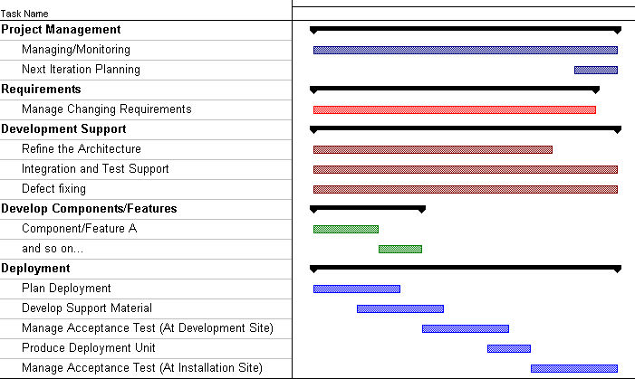

Examples Overview >
Examples Overview >
 Small Project Development Case >
Small Project Development Case >
 Project Lifecycle >
Project Lifecycle >
 Transition
Transition
Examples Overview >
Small Project Development Case >
Project Lifecycle >
Transition
|
|
Table of Contents |
Topics (on this page) |
This illustration shows how an iteration in transition phase could be organized on a small project. The lengths of the bars in the chart (indicating duration) have no absolute significance. You can navigate to the corresponding task description from each line of the chart by clicking on the task name. This illustration was created from a Microsoft Project Plan.

| Task | Description |
| Project Management: | |
| Managing/Monitoring |
This represents ongoing project management activities, including the following workflow details: On this small project, the Project Manager is also the Test Manager, so this task also includes:
The principal output artifacts are: |
|
This includes workflow details:
The principal output artifacts are:
The results of status assessments and iteration assessments should be considered in determining if any changes to process and tools are necessary. |
|
| Requirements | |
|
Manage Changing Requirements |
Requirements discovery and refinement is shown as complete at this stage, the remaining effort relating entirely to the management of change. The relevant workflow detail is: Manage Changing Requirements. |
| Development Support | |
|
Refine the Architecture |
The Software Architect has an ongoing task, which lessens as the project matures, to make any necessary changes to the software architecture. The relevant workflow detail is Refine the Architecture. |
|
Maintaining the build environment, selecting and running regression tests on builds, is an ongoing task. The relevant workflow details are: |
|
| Defect Fixing | Fixing defects in previously developed code is an ongoing task. The relevant workflow details are the same as for the "Develop Components/Features" tasks. |
|
Many tasks are organized around a feature, use case, or
scenario being implemented. Thus one task will often include the following
workflow details:
Other tasks may design and implement components that then support multiple features, use cases, or scenarios. Large tasks (more than a couple of weeks) may be divided into subtasks of incremental functionality. Other large tasks may be subdivided by the principal activity being performed. For example, into:
|
| Deployment | |
| Plan Deployment |
This is the workflow detail Plan Deployment. This task may alternatively be merged into the iteration planning that occurs at the end of the previous iteration. The principal output artifact is an updated Software Development Plan (Deployment Plan section). |
| Develop Support Material |
This is the workflow detail Develop Support Material. The principal output artifact is End-User Support Material. |
| Manage Acceptance Test (At Development Site) |
This is the workflow detail Manage Acceptance Test (At Development Site). The principal output artifact is an installed and tested Product. |
| Produce Deployment Unit |
This is the workflow detail Produce Deployment Unit. The principal output artifacts are: |
| Manage Acceptance Test (At Installation Site) |
This is the workflow detail Manage Acceptance Test (At Installation Site). For this sample, the software is deployed at a customer site. Other forms of deployment are discussed as part of the Discipline: Deployment. The principal output artifact is a Product installed and tested at the customer site. |
Configuration Management tasks (workflow details: Change and Deliver Configuration Items and Manage Change Requests) are folded into the above tasks. Administrative and environment support tasks have been omitted for simplification.
|
Rational Unified
Process
|